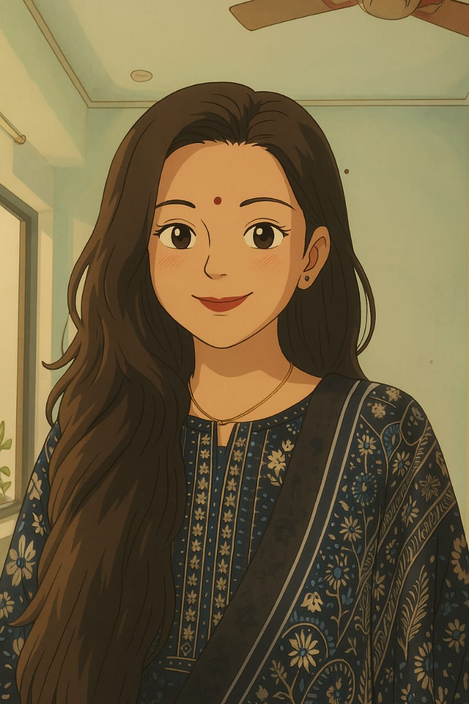
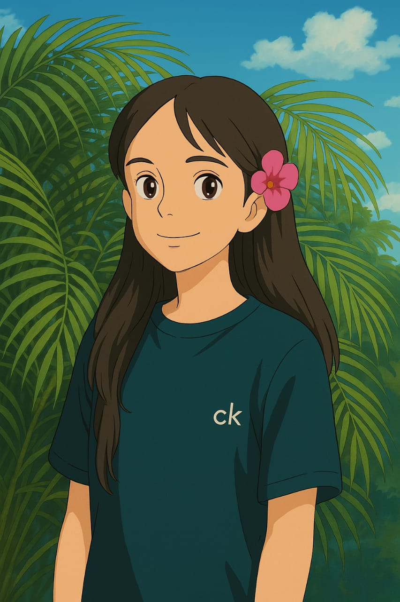

Riya
My name is Riya Koshti, and I am a first-year Master of Science in Information Technology (MSc IT) student at K.S School Of Business Management and Information Technology,Gujarat University. With a strong interest in technology, problem-solving, and innovation, I created this platform to showcase my academic journey, projects, and growing expertise in the field of IT.With a strong interest in software development and system design, I am passionate about building scalable, user-focused applications. This project is an opportunity for me to apply my skills in real-world scenarios, strengthen my understanding of core IT concepts, and grow as a developer.

Jahanvee
My name is Jahanvee Dabhi, and I am a first-year Master of Science in Information Technology (MSc IT) student at K.S School Of Business Management and Information Technology,Gujarat University.My focus lies in CSS Part of website, and I enjoy diving into how technology can be used to solve complex problems. Through this project, I aim to deepen my practical knowledge of information security, enhance my technical toolkit, and collaborate effectively to turn ideas into functional solutions. I believe that strong communication and strategic thinking are key elements of any successful project, and I look forward to bringing those values to our work.